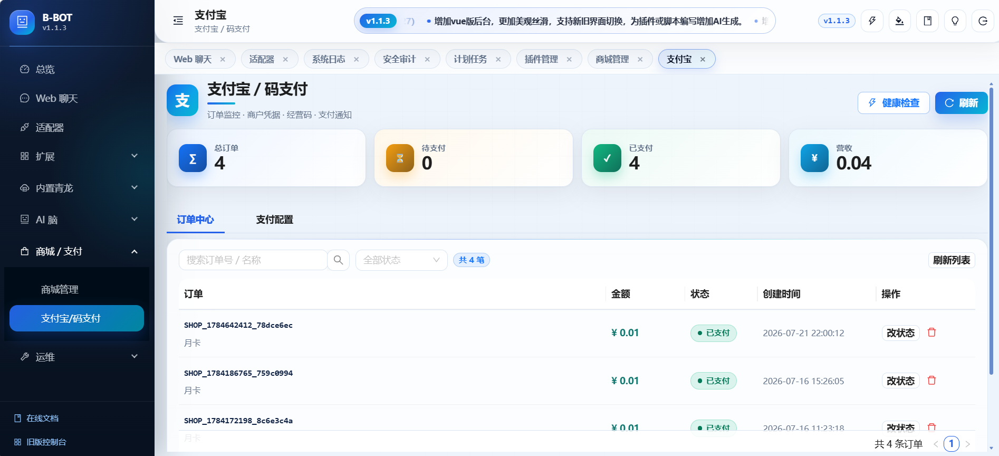

能力来源
技能可由 URL、GitHub 或技能市场导入，并与 MCP 工具组合。
One clear path
从常用聊天渠道到业务系统 Webhook，B-BOT 将接入、判断和执行放进一条可观察、可扩展的链路。
QQ（llonebot/ws）、官方 QQ Bot、wxclaw、Telegram Bot、企微、钉钉、飞书与 Custom Webhook。QQ Bot、企微、TG、wxclaw 等可配置多账号。
关键词、正则与全匹配，按渠道、群聊或私聊限定范围，把消息交给插件、Agent 或工作流。
Python / JS 插件可使用 Bucket、权限、主动推送、多轮输入与 Webhook，并兼容 ATM 写法。调试页支持 AI 编写与行级 diff，保存后尝试热重载。
B-BOT 为出站回调生成签名，业务系统据此验签。
Agents
一个适配器可绑定一个子智能体。绑定后使用该 Agent 的独立配置；未绑定时回退到主智能体。
一个适配器只绑定一个子智能体。
AI Brain
让触发、模型、工具与知识协同运行，再将结果回复到当前会话，或推送到已支持推送的渠道。
对话 · AI 定时 · 工作流
启用 · 降级 · 故障转移
技能 · MCP · 知识库
回复 · 支持的渠道推送 · Bot-Chat
技能可由 URL、GitHub 或技能市场导入，并与 MCP 工具组合。
用 LLM、MCP、知识与条件节点编排流程；AI 定时执行 Prompt 或工作流。
文本、文件、URL 与 `.bbotkb` 知识包；需要时由 Bot-Chat 人工接管。
Operations
脚本、任务、环境变量与商品订单，都有真实管理界面，不必在多个系统间来回切换。

Built-in QingLong
环境变量、定时任务、脚本、依赖与日志集中管理。JS / Python 脚本可通过 QLEnv 按名称查询和设置 env，更新时无需手填 id。
Commerce
商品上下架、订单管理、库存卡密与自动发货连在一起，机器人侧即可完成数字商品履约。

Use cases
同一套接入与执行能力，可以服务客服、业务系统、自动化运维和数字商品履约。
QQ、Telegram、企微、钉钉等渠道进入统一处理链，按适配器分配 Agent；需要时由 Bot-Chat 人工接管。
CRM 或工单系统通过 Custom Webhook 入站，处理结果经签名回调返回，并使用专用知识桶隔离资料。
客服、运营与运维分别使用独立模型、提示词、技能、知识和上下文，未绑定渠道仍由主智能体承接。
AI 定时执行 Prompt 或工作流，汇总知识与工具结果，再发送到已支持推送的渠道。
用内置青龙管理脚本、任务、依赖和日志，JS / Python 脚本通过 QLEnv 直接维护环境变量。
从商品选择到订单、库存卡密和自动发货，机器人侧完成购买流程，后台集中管理履约状态。
Get started
Docker 为首选。启动后打开管理台，挂载数据目录即可持久化。
docker run -d \
--name bbot \
--restart unless-stopped \
-p 5000:5000 \
-p 8888:8888 \
-v /var/run/docker.sock:/var/run/docker.sock \
-v /your/data/path:/app/mount \
241793/b-bot:latest部署完成后，浏览器打开 http://服务器IP:5000。